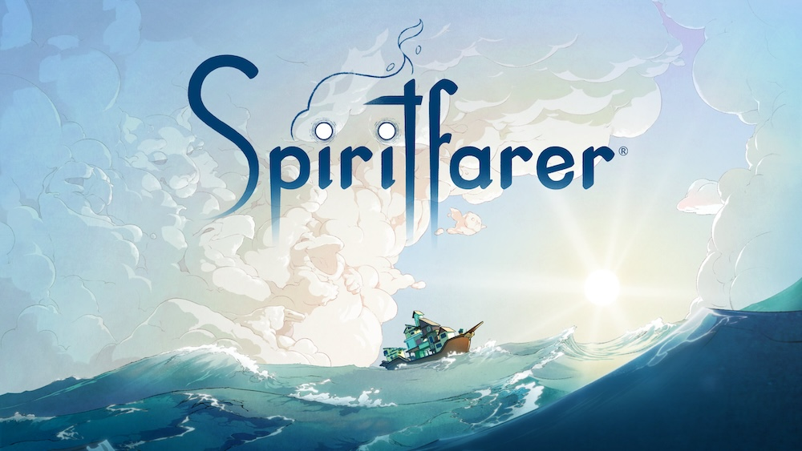
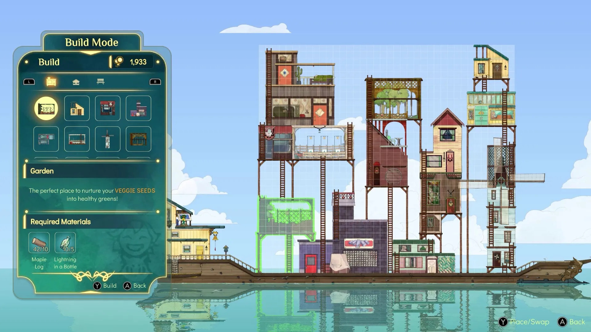

You play as a wayfarer of spirits named Stella in this space between death and the afterlife.
As you explore the world you meet many characters, and take care of them before sending them to the Everdoor (aka, the afterlife).
The main gameplay of this game takes place in the form of completing tasks for the different passengers on the ship. During the duration of their stay, they will ask for different things varying from quests you must complete to items you must bring them. As you complete these requests, you get to learn about these characters and their realtionship to you. Each spirit is related to you in some way whether it be your uncle, or a patient you took care of while you worked as a hospice nurse.
One of the things I adore about this game is your existence within it is never outwardly expressed. We only guess why Stella is there through context clues and anecdotes from her sister, who isn't technically a passenger on the boat (from my understanding). This game is full of theorizing, it is never stated explicitly why Stella is there, why her sister is there but not there, what your purpose in this world is, etc.
